“Whenever trying to make complicated systems and understand them, it’s crucial to divide the things up into as many pieces as I can, each of which I understand separately. I would like to understand the way of adding things up independently of what it is I’m adding up.” - Gerald Sussman
Zavedení čtyř bitové sčítačky
Projděme si jedním příkladem, abychom pochopili jak mohou být funkce, řešící jednoduché problémy, spojeny k řešení složitějšího problému. Problém, který chceme řešit, je simulace chování 4-b (ripple-carry) sčítačky programem v Elmu. Rozeberme si nejprve jednotlivé termíny z názvu.
4-b: bit je zkratka pro binary digit. Takže 4-bit znamená čtyř bitové binární číslo, jako např.
1001.ripple-carry: pamatujete se, jak jste se v dětství učili sčítat
5+5přenosem1o jeden sloupec vlevo, dostávajíce tak výsledek10? Později, když jste byli zběhlejší při používání tohoto způsobu, pokročili jste k matematickým problémům se dvěma převody - jako při sčítání95+5. Nejprve jste převedli jedničku ze součtu5+5vlevo, potom jste převedli jedničku ze součtu1a9opět o jeden sloupec vlevo, dostávajíc tak výsledek100. To je vpodstatě vysvětlení termínu "ripple-carry" (zřetězený přenos) — každé číslo, přenesené z jednoho sloupce, se zahrne do součtu ve sloupci vedlejším.-
sčítačka: digitální obvod, který sčítá dvě binární čísla.
Než se ponoříme hlouběji do 'ripple-carry adder', připomeneme si jak pracuje binární systém.
Binární systém
Desítková číselná soustava je poziční číselná soustava se základem 10. Pro zápis čísel se používají číslice 0 až 9. Základ 10 znamená, že každá číslice v čísle je desetkrát větší, než její soused napravo. Obrázek níže rozkládá desítkové číslo 4608, takže sami vidíte – číslice začínají řádem 100 vpravo, vedlejší číslice vlevo je desetkrát větší v řádu 101 a další vedlejší číslice vlevo je desetkrát větší v řádu 102, atd.
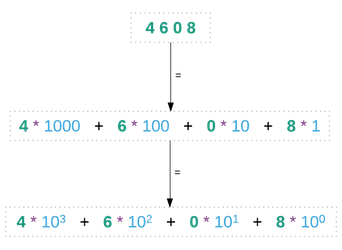
Binární systém má jenom dvě číslice — 0 a 1. Používá základ 2, což znamená, že každá číslice v binárním čísle je dvakrát větší než číslice vpravo. Zde je příklad binárního čísla 1101:
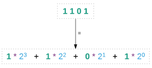
Chcete-li vědět jaké decimální hodnotě toto binární číslo 1101 odpovídá, je snadné to zjistit. Stačí spočítat dolní řádek jako jeden matematický výraz a uvidíte, že finální výsledek je 13. 13 je desítkový ekvivalent binárního čísla 1101.
Binární součet
Na počátku tohoto odstavce je nutno uvést, že pro sčítání binárních hodnot platí tyto předpoklady:
0 + 0 = 0, 0 + 1 = 1, 1 + 0 = 1 a 1 + 1 = 0 s přenosem jedničky do vyššího řádu.
Sčítání binárních čísel je podobné sčítání desítkových čísel, s tím rozdílem, že se přenáší hodnota 2 místo 10. Když například v desítkové soustavě sčítáme 6 + 3, dostáváme 9. Když ale sečteme 6 + 4, nelze výsledek vyjádřit jednomístnou číslicí. V tom případě se číslice úplně vpravo přemění na nulu a jedničku přenášíme o jedno místo vlevo.
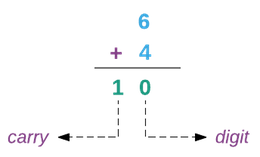
V binární soustavě, sečteme-li 1 + 1 jsme ve stejných úzkých jako v desítkové soustavě s 6 + 4: vyčerpali jsme číslice, které máme k disposici. Když nám dojdou číslice, je čas nastavit číslici vpravo na nulu a přenést jedničku o jedno místo vlevo.
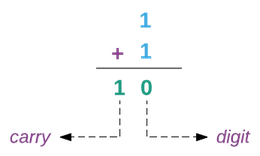
Podle této logiky je snadné ve sčítání binárních čísel pokračovat. Zjistěme, jaké binární číslo je ekvivalentní desítkovému číslu 4. Pamatujte, že pokaždé, když nám dojdou číslice, znamená to, že musíme resetovat na nulu a převést jedničku:
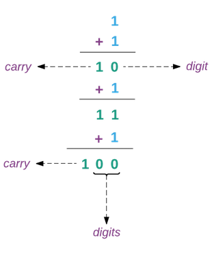
Nyní vidíme, že decimální 4 je binární 100.
Sčítání čísel se 4-b sčítačkou
Čtyř-bitová (ripple-carry) sčítačka může sčítat čísla se čtyřmi číslicemi. Obrázek dole prezentuje sčítání binárních čísel 1110 + 1011, přenášené číslice jsou zvýrazněny purpurovou barvou.
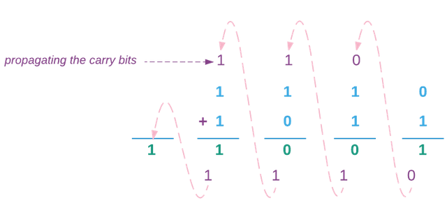
Ripple-carry adder (RCA) sčítá dvě číslice počínaje zprava. Vyskytne-li se přenos (carry), je přemístěn do následného součtu. Po přičtení všech čtyř číslic, je nám prezentován tento výstup:
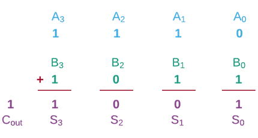
A0, A1, A2, and A3 reprezentují jednotlivé číslice prvního čísla. B0, B1, B2, and B3 reprezentují jednotlivé číslice druhého čísla. S0, S1, S2, and S3 reprezentují jednotlivé číslice součtu. Cout reprezentuje nejvýznamnější číslici součtu. Nejvýznamnější číslice je číslice s nejvyšší hodnotou v posledním řádku. Zde je obvod pro 4-bitovou sčítačku.
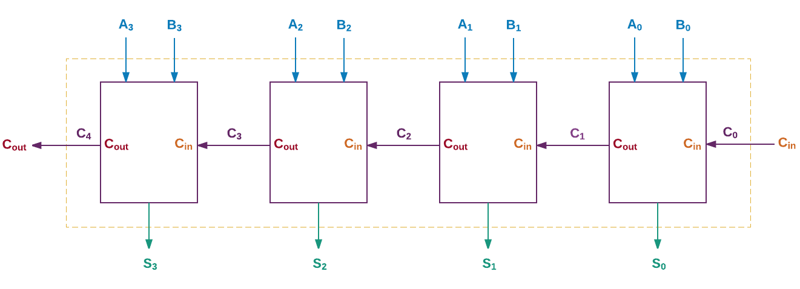
Cin je přenos (carry-in) z předchozího sčítání. Cout je přenos (carry-out), který bude předán dalšímu sčítání.
Zobrazený obvod je to, co chceme simulovat v Elm. Kde začít? Nejprve se musíme pokusit rozdělit řešený problém do menších částí. Při bližším pohledu vidíme, že RCA používá opakovaně stejnou sčítačku s různými vstupy a výstupy. Tato sčítačka slouží jako stavební kámen pro RPA a nazývá se jedno bitová úplná sčítačka (full adder). Prozkoumejme tuto 1-b úplnou sčítačku a jak ji můžeme implementovat v RCA.
1-bit full adder
Jednobitová úplná sčítačka sčítá pouze dvě číslice ale je schopná přijmout i přinášenou (carry-in) hodnotu. Přijímá tři vstupy a produkuje dva výstupy, jak je ukázáno v obrázku dole:
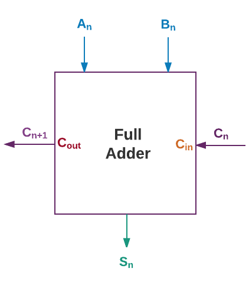
An and Bn představují sčítané binární číslice. Cn představuje přinášenou číslici a Cn+1 představuje přenášenou číslici. Sn představuje nejméně významnou číslici součtu. Nejméně významná číslice je číslice s nejnižší hodnotou. U binárního čísla to je číslice úplě vpravo. Zde je pravdivostní tabulka, která ukazuje všechny možné vstupy a výstupy, produkované sčotem:

Můžeme rozložit jednobitový "full adder" na ještě menší části? Jak se ukazuje, můžeme - jak ilustrováno v obrázku dole.

"Full adder" může být implementován s použitím dvou polovičních sčítaček (half adder) a hradla OR. Co je hradlo OR (OR gate) se dozvíme brzo ale nejprve si povězme, jak pracuje poloviční sčítačka.
Half Adder
Half adder rovněž sčítá dvě binární číslice ale na rozdíl od full adder nepříjímá přinášenou hodnotu.
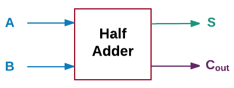
Zde je pravdivostní tabulka pro half adder, která ukazuje všechny jeho možné vstupy a výstupy:

Jeho implementaci můžeme rozložit na ještě menší komponenty: hradlo AND, hradla OR a invertoru.
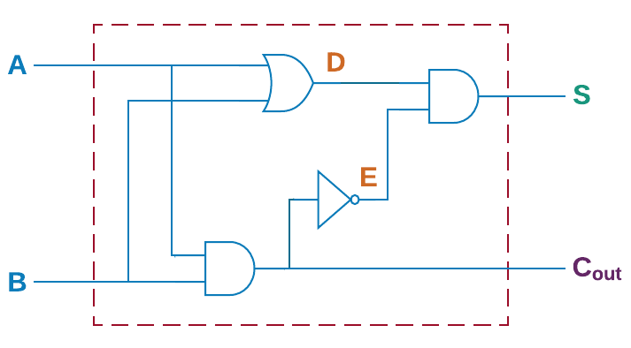
Hradlo AND
Hradlo AND přijímá dva signály a vrací jeden výstup, jenž je logickým AND vstupů. Je to ekvivalent operátoru &&.

Hradlo OR
Hradlo OR přijímá dva vstupní signály a vrací výstup, jenž je logickýmOR vstupů. Je to ekvivalent operátoru ||.

Invertor
Invertor přijímá jeden vstupní signál a převrací jej. Je-li vstupem 0 vrací 1. Je-li vstupem 1, vrací 0. Je to ekvivalent funkce not.

Nyní, když jsme náš problém (4-bit RCA) rozložili na jeho základní stavební bloky (hradlo AND, hradlo OR a invertor), můžeme začít sestavovat řešení jejich použitím.
Zavedení hradla AND
Vytvořme samostatný soubor, který bude obsahovat všechen kód, který napíšeme při implementaci odlišných částí 4b-RCA. V adresáři elm-examples vytvořte nový soubor s názvem RippleCarryAdder.elm.
Vložte následující kód do souboru RippleCarryAdder.elm.
module RippleCarryAdder exposing (..)
import Bitwise
andGate a b =
Bitwise.and a bDeklarovali jsme nový modul, nazvaný RippleCarryAdder a importovali další modul, nazvaný Bitwise, jenž obsahuje funkce, které manipulují s jednotlivými bity. Shodou okolností provádí funkce Bitwise.and přesně totéž, co se očekává od našeho hradla AND, což je určení logického AND dvou vstupních signálů.
Můžete se ptát, proč jsme prostě pro implementaci funkce andGate nepoužili operátor &&. Je to proto, že tento operátor pracuje pouze s booleovskými hodnotami. Protože se pokoušíme simulovat digitální obvod, chceme pracovat s hodnotami 0 a 1 místo s True a False, i když jsou koncepčně ekvivalentní.
Obecně nemá smysl vytvářet funkci, která pouze obaluje stávající funkci ale název andGate je v kontextu digitálního obvodu víc osvětlující, než pouhé and. Načtěte modul RippleCarryAdder do replu, otevřeného v adresáři elm-examples a aplikujte funkci andGate následujícím způsobem:
> import RippleCarryAdder exposing (..)
> andGate 0 0
0
> andGate 0 1
0
> andGate 1 0
0
> andGate 1 1
1Na rozdíl od modulu Playground jsme nepsali funkci main v modulu RippleCarryAdder. To proto, že budeme všechen kód spouštět v replu. Funkci main potřebujeme tehdy, když chceme náš kód spouštět v prohlížeči.
I když máme v modulu RippleCarryAdder pouze jednu funkci, použili jsme (..) abychom zpřístupnili (expose) vše, co obsahuje. Usnadní nám to práci s modulem, až do něho přídáme více funcí. Protože jména našich funkcí budou stále velmi deskriptivní, je málá možnost, že je zaměníme s jinými, již importovanými jmény.
Zavedení hradla OR
Modul Bitwise také obsahuje funkci pro určení logického OR dvou signálů. Použijeme ji pro implementaci hradla OR. Přidejte následující definici funkce do spodní části souboru RippleCarryAdder.elm.
orGate a b =
Bitwise.or a bZavolejte ji z replu a ověřte, že pracuje dle očekávání.
> orGate 0 0
0
> orGate 0 1
1
> orGate 1 0
1
> orGate 1 1
1Modul RippleCarryAdder nemusíme reimportovat pokaždé, když v něm provedeme nějaké změny. Repl to automaticky udělá za nás, kdykoli detekuje nějakou změnu. Není to pěkné?
Zavedení invertoru
V modulu Bitwise není vhodná funkce, která provádí to, co se očekává od invertoru. Vytasme se tedy se svou vlastní. Přidáme následující definici funkce do souboru RippleCarryAdder.elm.
inverter a =
case a of
0 ->
1
1 ->
0
_ ->
-1Funkce inverter převrací vstupní signál pomocí výrazu case. Je-li vstupní signál 0, vrací 1 a vice versa. Je-li vstupní signál cokoliv jiného než 0 nebo 1, vrací -1. Použili jsme negativní 1 abychom indikovali, že vstupní signál nereprezentuje platné binární číslo.
Kdybychom nepřidali _ -> -1 catch-all pattern, Elm by protestoval, protože tento vzor je v idiomu case povinný. Až se seznámíme s typy, budeme moci funkci inverter zavést lépe.
Ověřme si v replu, že inverter pracuje jak očekáváno.
> inverter 0
1
> inverter 1
0Nyní, když jsme zavedli základní stavební bloky, můžeme začít sestavovat složitější části.
Zavedení poloviční sčítačky
Přidejte následující definici funkce na spodek souboru RippleCarryAdder.elm.
halfAdder a b =
let
d =
orGate a b
e =
andGate a b
|> inverter
sumDigit =
andGate d e
carryOut =
andGate a b
in
{ carry = carryOut
, sum = sumDigit
}Funkce halfAdder napodobuje obvod poloviční sčítačky. Používá všechna tři logická hradla, která jsme zavedli již dříve, k výpočtu součtu a přenosu, jež jsou posléze vrácena v záznamu (record). Konstanty d a e obsahují mezilehlé výsledky, které jsou posléze předány hradlu AND pro výpočet výsledného součtu.
V sekci Používání entic jsme si říkali, že chceme-li vracet více hodnot z jedné funkce, máme zvážit použití entice (tuple). Záznamy (recors) jsou rovněž vhodné pro návrat vícerých hodnot. Použijeme-li v tomto případě záznam, snadněji na výstupu funkce halfAdder rozeznáme, které číslo je součet a které je přenos (carry).
V záznamu nahoře jsme přidali čárku před sum = sumDigit, místo abychom ji přídali na konec předchozího řádku. Ve většině jazyků se při tvorbě kolekce přidává čárka na konec ale Elm style guide doporučuje ji přidávat na začátek řádku. Údajně se snadněji zjistí její nepřítomnost. Zde je příklad většího záznamu s čárkami na koncích:
{ carry1 = carryOut1,
sum1 = sumDigit1,
carry2 = carryOut2
sum2 = sumDigit2,
carry3 = carryOut3,
sum3 = sumDigit3
}Je snadné přehlédnout, že ve třetím řádku chybí čárka. Dáme-li je ale na začátek, je chybějící čárka skoro nepřehlédnutelná
{ carry1 = carryOut1
, sum1 = sumDigit1
, carry2 = carryOut2
sum2 = sumDigit2
, carry3 = carryOut3
, sum3 = sumDigit3
}Kompilátor takovéto chyby snadno odchytí ale dáme-li čárky na začátek, ušetříme si jednu cestu ke kompilátoru. Ověřme si, že funkce halfAdder pracuje dle očekávání.
> halfAdder 0 0
{ carry = 0, sum = 0 }
> halfAdder 0 1
{ carry = 0, sum = 1 }
> halfAdder 1 0
{ carry = 0, sum = 1 }
> halfAdder 1 1
{ carry = 1, sum = 0 }Zavedení 1-b úplné sčítačky
Implementujme úplnou sčítačku (full adder) použitím dvou polovičních sčítaček (half adders) a hradla OR. Přidejte následující funkci do souboru RippleCarryAdder.elm.
fullAdder a b carryIn =
let
firstResult =
halfAdder b carryIn
secondResult =
halfAdder a firstResult.sum
finalCarry =
orGate firstResult.carry secondResult.carry
in
{ carry = finalCarry
, sum = secondResult.sum
}Funkce fullAdder rovněž napodobuje obvod full adder, který jsme viděli dříve. Full adder je schopen přijmout přenos carry-in jako jeden ze vstupů. Takže ji zadáme třetí parametr, který reprezentuje hodnotu carry-in a dva vstupní signály: a a b. Ověřme si, že logika funkce fullAdder pracuje, jak očekáváno.
> fullAdder 0 0 0
{ carry = 0, sum = 0 }
> fullAdder 0 0 1
{ carry = 0, sum = 1 }
> fullAdder 0 1 0
{ carry = 0, sum = 1 }
> fullAdder 0 1 1
{ carry = 1, sum = 0 }
> fullAdder 1 0 0
{ carry = 0, sum = 1 }
> fullAdder 1 0 1
{ carry = 1, sum = 0 }
> fullAdder 1 1 0
{ carry = 1, sum = 0 }
> fullAdder 1 1 1
{ carry = 1, sum = 1 }Zavedení 4-b Ripple-Carry Adder
Konečně jsme připraveni implementovat 4-b RCA. Přidejte naásledující definici funkce do souboru RippleCarryAdder.elm.
rippleCarryAdder ( a3, a2, a1, a0 ) ( b3, b2, b1, b0 ) carryIn =
let
firstResult =
fullAdder a0 b0 carryIn
secondResult =
fullAdder a1 b1 firstResult.carry
thirdResult =
fullAdder a2 b2 secondResult.carry
finalResult =
fullAdder a3 b3 thirdResult.carry
in
{ carry = finalResult.carry
, sum3 = finalResult.sum
, sum2 = thirdResult.sum
, sum1 = secondResult.sum
, sum0 = firstResult.sum
}FunkcerippleCarryAdderopakovaně používá funkci fullAdder k výpočtu výsledné sumy a přenosu. Ověřme si, zda pracuje, jak očekáváme.
> rippleCarryAdder ( 1, 1, 1, 0 ) ( 1, 0, 1, 1 ) 0
{ carry = 1, sum3 = 1, sum2 = 0, sum1 = 0, sum0 = 1 }
> rippleCarryAdder ( 1, 1, 1, 0 ) ( 1, 0, 1, 1 ) 1
{ carry = 1, sum3 = 1, sum2 = 0, sum1 = 1, sum0 = 0 }Abychom to shrnuli, vzali jsme si složitý problém vytvoření čtyř bitové sčítačky (ripple-carry adder) a rozložili jsme jej na jeho základní stavební bloky (hradlo AND, hradlo OR a invertor). Tyto stavební bloky jsme použili k vytvoření poloviční sčítačky (half adder). Poloviční sčítačku a bránu OR jsme poté použili k sestavení plné sčítačky (full adder). Nakonec jsme čtyřikrát použili plnou sčítačku k vytvoření čtyř bitové sčítačky (4-bit ripple-carry adder).
Použili jsme malé, spolehlivé funkce k vytvoření větších a stejně spolehlivých funkcí. Tento způsob řešení složitého problému spojením malých funkcí je zcela obvyklý ve funkcionálně programovacím jazyku, jako je Elm. Tento způsob je spolehlivý hlavně proto, že všechny funkce v Elmu jsou pure.
Zlepšení vstupů a výstupů
Výše sestavená funkce rippleCarryAdder přijímá vstupní signály jako entice a vrací výstup jako záznam. To čtení vstupů a výstupů poněkud ztěžuje. Byly by mnohem čitelnější, maje takovýto formát:
rippleCarryAdder 1110 1011 0
11001
rippleCarryAdder 1110 1011 1
11010Zlepšení vstupů
Na rozdíl od většíny ostatních jazyků, Elm dosud neposkytuje způsob reprezentace binárních čísel. Na příklad v JavaScriptu je můžeme prezentovat přidáním prefixu 0b:
var a = 0b1110 // Equivalent to 14 in decimal
var b = 0b1011 // Equivalent to 11 in decimalMusíme tedy ještě trochu zapracovat, abychom byli schopni zadávat binární čísla jako vstupy funkci rippleCarryAdder. První věc, kterou musíme udělat, je extrahovat číslice z binárního čísla, abychom je mohli zadávat jednotlivě různým sčítačkám. Upravte funkci rippleCarryAdder podle vzoru dole, aby přijímala čísla místo entic:
rippleCarryAdder a b carryIn =
let
-- Extract digits
( a3, a2, a1, a0 ) =
extractDigits a
( b3, b2, b1, b0 ) =
extractDigits b
-- Compute sum and carry-out
firstResult =
fullAdder a0 b0 carryIn
secondResult =
fullAdder a1 b1 firstResult.carry
thirdResult =
fullAdder a2 b2 secondResult.carry
finalResult =
fullAdder a3 b3 thirdResult.carry
in
{ carry = finalResult.carry
, sum3 = finalResult.sum
, sum2 = thirdResult.sum
, sum1 = secondResult.sum
, sum0 = firstResult.sum
}Použili jsme neexistující funkci extractDigits pro vynětí číslic ze vstupních čísel. Uveďme tuto funkci nyní. Přidejte následující definici funkce do spodní části souboru RippleCarryAdder.elm.
extractDigits number =
toString number
|> String.split ""
|> List.map stringToInt
|> Array.fromList
|> arrayToTupleFunce extractDigits přijímá číslo, reprezentující binární číslice a provádí jej několika transformacemi, než jsou všechny číslice extrahovány.
Pojďme si tyto transformace blíže popsat.
Nemusíte si každý dále popisovaný krok zkoušet. Jsou uvedeny jenom pro osvětlení, jak funkce extractDigits pracuje. Některé z nich ani nebudou kompilovat, protože nejsou uvedeny všechny nezbytné funkce, použité uvnitř extractDigits.
Krok 1: Přeměňte vstupní číslo na řetězec.
> toString 1110
"1110"Krok 2: Rozdělte tento řetězec do seznamu.
> String.split "" "1110"
["1","1","1","0"]Krok 3: Konvertujte každý element seznamu zpět na číslo.
> List.map stringToInt [ "1", "1", "1", "0" ]
[1,1,1,0]Konverze čísla na seznam číslic se provádí oklikou, protože Elm pro to nemá funkci.
Krok 4: Přeměňte seznam na array, abychom měli přístup ke každé číslici prostřednictvím indexu.
> Array.fromList [ 1, 1, 1, 0 ]
Array.fromList [1,1,1,0]Krok 5: Konvertujte array na entici (tuple).
> arrayToTuple (Array.fromList [ 1, 1, 1, 0 ])
(1,1,1,0)Použití entice k definování více konstant najednou je docela výhodné:
( a3, a2, a1, a0 ) =
extractDigits aPoté, co jsme pochopili práci funkce extractDigits, zaveďme ony dvě neexistující funkce (stringToInt a arrayToTuple), které jsme použili uvnitř funkce extractDigits. Přidejte následující definice funkcí na konec souboru RippleCarryAdder.elm.
stringToInt string =
String.toInt string
|> Result.withDefault -1
arrayToTuple array =
let
firstElement =
Array.get 0 array
|> Maybe.withDefault -1
secondElement =
Array.get 1 array
|> Maybe.withDefault -1
thirdElement =
Array.get 2 array
|> Maybe.withDefault -1
fourthElement =
Array.get 3 array
|> Maybe.withDefault -1
in
( firstElement, secondElement, thirdElement, fourthElement )Modul Array musíme ručně importovat. Vložte tento import hned pod import modulu Bitwise v souboru RippleCarryAdder.elm.
import Bitwise
import ArrayJak její jméno naznačuje, přijímá funkce stringToInt řetězec a konvertuje jej na celé číslo. Protože funkce String.toInt vrací hodnotu typu Result místo celého čísla, potřebujeme ještě trochu zapracovat, abychom konvertovali řetězec na celé číslo.
> String.toInt "1"
Ok 1 : Result.Result String IntTyp Result si vysvětlíme později v této kapitole. Pro tuto chvíli si jej představte jako kontejner, který obsahuje buď úspěšný výstup z operace nebo sdělení "error". V Elmu je definován takto:
Tuto definici nevkládejte do replu.
type Result error value
= Ok value
| Err errorTakže pokud byla operace úspěšná, jako v String.toInt "1", obsahuje Ok a výstupní hodotu: Ok 1. Jinak obsahuje Err a sdělení o chybě, jako v tomto příkladě:
> String.toInt "a"
Err "could not convert string 'a' to an Int" : Result.Result String IntJak vidno, funkce String.toInt nemůže garantovat, že bude vždy schopna konvertovat řetězec na číslo. Proto vrací Result místo celého čísla. Což ale tento kód ve funkci stringToInt:
|> Result.withDefault -1Result.withDefault je výhodná funkce, která vrací hodnotu, je-li výsledek OK, je-li ale výsledek Err, vrací implicitní hodnotu -1, v našem případě indikujíc neplatné binární číslo.
Dále si projdeme kódem ve funkci arrayToTuple. Jak její jméno napovídá, tato funkce přijímá array, načítá hodnoty pro každý index a vkládá je do entice. Jak jsme si říkali v sekci Array, můžeme použít funkci Array.get k načtení hodnoty z arraye pro určitý index.
> import Array
> myArray = Array.fromList [ 0, 1, 2, 3, 4 ]
Array.fromList [0,1,2,3,4]
> Array.get 3 myArray
Just 3 : Maybe.Maybe numberStejně jako String.toInt, funkce Array.get
rovněž nevrací hledanou hodnotu přímo. Místo toho vrací Maybe. Typ Maybe pracuje velmi podobně jako typ Result. V Elmu je definován takto:
type Maybe a
= Just a
| NothingTakže, když hledaná hodnota existuje, obsahuje Just, následované hodnotou. V opačném případě obsahuje Nothing. Stejně jako String.toInt, nemůže funkce Array.get garantovat, že u daného indexu bude k disposici hodnota.
> Array.get 10 myArray
Nothing : Maybe.Maybe numberMaybe.withDefault je rovněž výhodná funkce, která vrací hodnotu, pokud existuje. Pokud neexistuje, vrací impicitní hodnotu.
Když nyní obnovíme funkci rippleCarryAdder, měli bychom býti schopni zadávat vstupní signály jako čísla místo entic.
> rippleCarryAdder 1110 1011 0
{ carry = 1, sum3 = 1, sum2 = 0, sum1 = 0, sum0 = 1 }Mnohem lepší! Nevím, zda jste to zaznamenali, ale funkce rippleCarryAdder má bug: má-li vstupní binární číslo na začátku nuly, je výstup nesprávný.
> rippleCarryAdder 1001 0011 0
{ carry = 1, sum3 = 1, sum2 = 0, sum1 = 0, sum0 = 0 }Když sečteme 1001 a 0011, měl by být výstup 1100 ale my dostáváme 11000. Problém je s největší pravděpodobností ve funkci extractDigits. Pokusme se zjistit, co tento problém způsobuje.
> toString 0011
"11"
> String.split "" "11"
["1","1"]
> List.map stringToInt [ "1", "1" ]
[1,1]
> arrayToTuple (Array.fromList [ 1, 1 ])
(1,1,-1,-1)Příčinou problému je funkce toString. Při konverzi na řetězec jsou odstraněny počáteční nuly. Jeden způsob nápravy této svízele spočívá ve vypodložení (padding) výstupu dostatečným počtem nul předtím, než je předán funkci String.split:
extractDigits number =
toString number
|> String.padLeft 4 '0'
|> String.split ""
|> List.map stringToInt
|> Array.fromList
|> arrayToTupleNicméně, celý tento přístup konvertování čísla na nulami vypodložený řetězec, jenž je posléze konvertován zpět na čísla, je poněkud nemotorný. Proč nenapíšeme funkci, která přímo konvertuje číslo na seznam číslic bez koketování s řetězci? Přidejte následující definici funkce na spodek kódu v souboru RippleCarryAdder.elm.
digits number =
if number == 0 then
[]
else
digits (number // 10) ++ [ number % 10 ]Funkce digits přijímá číslo a vrací senznam číslic.
> digits 1100
[1,1,0,0]Když jsme se rozhodli implementovat čtyřbitový R-C sčítač, rozložili jsme problém do menších subproblémů, individálně jsme je řešili a výsledky zkombinovali. Funkce digits sleduje podobný přístup, avšak místo aby se její subproblémy řešili dalšími funkcemi, řeší se funkcí samotnou. Abychom pochopili, jak se to dělá, rozložme problém vynětí číslic z čísla 1100 na subproblémy:
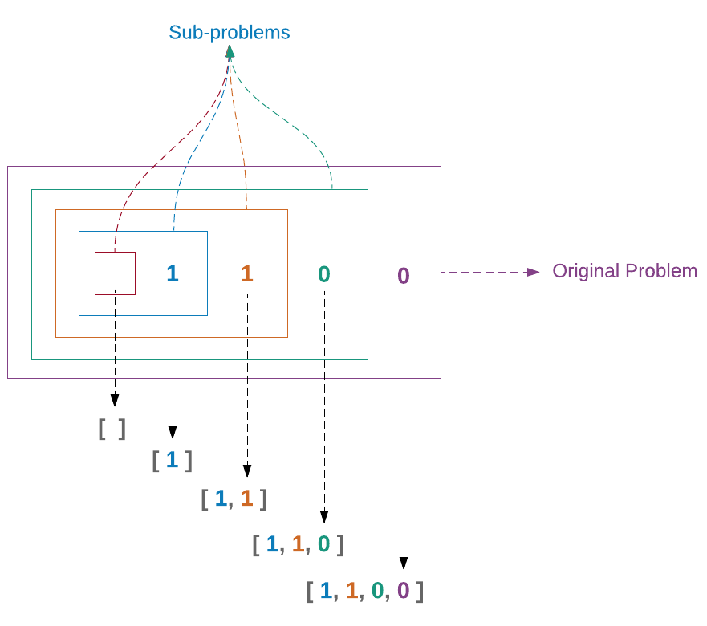
Začneme s číslem 1100, což je náš původní problém. Odebereme z něj poslední číslici a problém redukujeme na 110. Potom odebereme poslední číslici z 110 a dále redukujeme problém na 11. Tak pokračujeme do vyčerpání všech číslic a zredukovali jsme náš problém na prázdný seznam. Potom zkombinujeme řešení každého subproblému postupujíc zleva doprava.
Rekurze
Tento proces řešení problému řešením nejprve menší verze problému se nazývá rekurze. Problém je nakonec redukován na tak malou část, že ji můžeme řešit přímo. Této koncové části se říká základní případ (base case). V ukázce nahoře byla tímto základním případem situace, kdy došly číslice. Tato situace byla řešena vrácením prázdného seznamu.
Rekurze je programovací technika, při níž je určitá procedura nebo funkce znovu volána dříve, než je dokončeno její předchozí volání.
Jako většina programovacích jazyků, Elm podporuje rekurzi tím, že dovoluje aby funkce volala sama sebe tak, jak jsme učinili v definici funkce digits. Při používání rekurze musíme mít na mysli tyto tři věci:
Jak zredukovat problém - Nelze-li problém redukovat na menší verze, potom patrně není rekurze tím nejlepším řešením. Proto musíme vědět, jak přesně chceme problém redukovat. Funkce digits to dělala dělením čísla (number) deseti.
digits (number // 10)Operátor // provádí celočíselné dělení, které odhazuje vše, co je za desetinnou čárkou. Rekurzi jsme pro řešen 4-bit R-C sčítadla nepoužili proto, že jsme nemohli redukovat problém na menší verze téhož.
Co je základní případ - Řádně navržená rekurzivní funkce musí problém zjednodušovat postupným voláním (invokací) sebe sama až posléze dospěje k základnímu případu. Jakmile k němu dospěje, použije jeho výsledek k postupnému řešení předchozích případů. Bez základního případu vytvoří rekurzivní funkce nekonečnou smyčku. Zde je základní případ funkce digits:
if number == 0 then
[]Po třetí invokaci funkce digitsje číslo 1100 redukováno na 1. Je-li pro toto číslo provedeno celočíselné dělení hodnotou 10, stává se 0. V tom případě je podmínka základního případu splněna a vrací se prázdný seznam. Kdybychom tuto podmínku neměli, běžela by funkce digits do nekonečna.
Jak zkombinovat výsledky subproblémů - Jakmile jsme dospěli k základnímu případu, protřebujeme mechanizmus pro uplatnění výsledků z každé invokace. Funkce digits to dělá použitím operátoru ++.
digits (number // 10) ++ [ number % 10 ]Abychom lépe poznali, jak rekurze pracuje za kulisami, projděme krok za krokem provedením funkce digits.
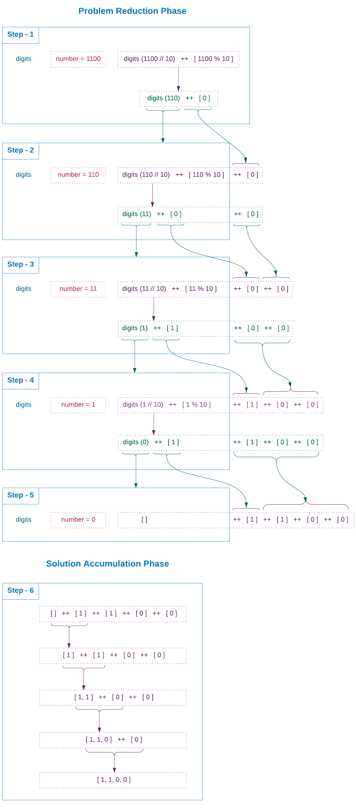
Rozložení invokace rekurzivní funkce na jednotlivé kroky je dobré, když se pokoušíme v počátcích porozumět, jak rekurze pracuje, ale jakmile si pro rekurzi utvoříme intuitivní předvídavost, měli bychom se explicitnímu přemýšlení o průběhu invokací vyhnout. Místo toho bychom se měli soustředit na ony tři výše uvedené kroky.
Mějme zato, že rekurzi již rozumíte. Pokud ne, tak se tím netrapte, není to jednoduché ani pro mistry. Potřebujete jenom více praxe se psaním rekurzivních funkcí a s jejich používáním. Pro hlubší ponoření do tématu existují mnohé zdroje. Doporučuji vyzkoušet mini kurz Khanovy akademie, který nejenom vysvětluje rekurzi jednoduchými pojmy ale také uvádí mnohé příklady.
Vylepšení výkonu funkce digits
V Elmu je z hlediska výkonu účinnější vytvářet seznam přidáváním elementů na začátek použitím operátoru cons (::), než připojování hodot na konec operátorem ++. Mějme takovýto seznam: [ 2, 3, 4, 5 ]. Na jeho začátek chceme přidat číslo 1:
> 1 :: [ 2, 3, 4, 5 ]
[1,2,3,4,5]Operátor cons netraverzuje celým seznamem před přidáním daného čísla do čela, zatímco ++ ano. Proto se tento kód:
> [ 2, 3, 4, 5 ] ++ [ 6 ]
[2,3,4,5,6]změní za scénou vpodstatě v toto:
> 5 :: [ 6 ]
[5,6]
> 4 :: [ 5, 6 ]
[4,5,6]
> 3 :: [ 4, 5, 6 ]
[3,4,5,6]
> 2 :: [ 3, 4, 5, 6 ]
[2,3,4,5,6]Operátor ++ jsme použili ke spojení seznamů s jedním elementem ve funkci digits. Nyní, když víme, že je operátor cons výkonnější, zaveďme jeho použití ve funkci digits. Ve výše uvedených příkladech jsou prováděné výpočty tak malé, že mezi oběma operátory nezaznamenáme velký rozdíl v rychlosti. Teprve když funkci digits zadáme velké číslo, začne se rozdíl zvětšovat. Změňte funkci digits v souboru RippleCarryAdder.elm takto:
digits number =
let
digits n =
if n == 0 then
[]
else
(n % 10) :: digits (n // 10)
in
digits number
|> List.reverseS nově získaným chápáním rekurze byste si měli umět představit, jak nová implementace pracuje. Změňte funkci extractDigits v souboru RippleCarryAdder.elm aby použila novou verzi funkce digits:
extractDigits number =
digits number
|> Array.fromList
|> arrayToTupleFunkce extractDigits je nyní zhuštěnější s funkcí digits. Takto vypadala předtím:
extractDigits number =
toString number
|> String.split ""
|> List.map stringToInt
|> Array.fromList
|> arrayToTupleNová verze stále neřeší problém přičtení čísla s nulami na začátku ale vyplnění seznamu nulami na začátku je docela snadné. Přidejte následující definici funkce na konec kódu v souboru RippleCarryAdder.elm.
padZeros total list =
let
numberOfZeros =
total - (List.length list)
in
(List.repeat numberOfZeros 0) ++ listFunkce padZeros vyplňuje seznam nulami až do zadané délky parametrem total. Použijme padZeros ve funkci extractDigits.
extractDigits number =
digits number
|> padZeros 4
|> Array.fromList
|> arrayToTupleKdyž nyní přičteme binární číslo s nulami na začátku, dostaneme správný výsledek.
> rippleCarryAdder 1001 0011 0
{ carry = 0, sum3 = 1, sum2 = 1, sum1 = 0, sum0 = 0 }Zlepšení vystupu
Obraťme naší pozornost k výstupu funkce rippleCarryAdder. Aktuálně vypadá takto:
{ carry = 0, sum3 = 1, sum2 = 1, sum1 = 0, sum0 = 0 }My bychom však chtěli aby vypadal takto:
1100Ideální by byl výstup ve tvaru: 01100 ale Elme odseká počáteční nuly jak v replu, tak ve zdrojovém souboru.
> 01100
1100Zobrazit výstup jako číslo není až tak obtížné. Vše co musíme udělat je shromáždit součet a číslici výstupního přenosu do seznamu a konvertovat tento seznam na číslo. Upravte funkci rippleCarryAdder takto:
rippleCarryAdder a b carryIn =
let
-- Extract digits
( a3, a2, a1, a0 ) =
extractDigits a
( b3, b2, b1, b0 ) =
extractDigits b
-- Compute sum
firstResult =
fullAdder a0 b0 carryIn
secondResult =
fullAdder a1 b1 firstResult.carry
thirdResult =
fullAdder a2 b2 secondResult.carry
finalResult =
fullAdder a3 b3 thirdResult.carry
in
[ finalResult, thirdResult, secondResult, firstResult ]
|> List.map .sum
|> (::) finalResult.carry
|> numberFromDigitsJediná věc, která se změnila, je část uvnitř oblasti in. Projděme si novým kódem krok za krokem.
Vypisovaný kód si nemusíte v každém kroku zkoušet. Je uváděn pro demonstraci toho, jak funkce rippleCarryAdder produkuje binární číslo jako výstup. Některé ukázky ani nebudou kompilovat, protože jsme neuvedli všechny nezbytné funkce, použité uvnitř rippleCarryAdder.
Krok 1: Vložit záznamy, produkované každou úplnou sčítačkou, do seznamu.
> [ finalResult, thirdResult, secondResult, firstResult ]
[{ carry = 0, sum = 1 },{ carry = 0, sum = 1 },{ carry = 1, sum = 0 },{ carry = 1, sum = 0 }]Krok 2: Mapovat seznam záznamů na seznam sumárních číslic.
> List.map .sum [ finalResult, thirdResult, secondResult, firstResult ]
[1,1,0,0]Jak zmíněno v sekci Record, může být funkce map použita k transformaci seznamu záznamů na nový seznam, který obsahuje hodnoty z určité vlastnosti. My jsme použili specielní funkci .sum pro vynětí součtových číslic z každého záznamu.
Step 3: Přidat na čelo seznamu číslici výstupního přenosu (carry-out).
> (::) finalResult.carry [1,1,0,0]
[0,1,1,0,0]Krok 4: Konvertovat seznam číslic na číslo.
> numberFromDigits [0,1,1,0,0]
1100Funkci numberFromDigitsjsme dosud nezavedli. Učiňme tak nyní. Přidejte následující definici funkce na konec kódu v souboru RippleCarryAdder.elm.
numberFromDigits digitsList =
List.foldl (\digit number -> digit + 10 * number) 0 digitsListTato funkce používá funkci foldl k redukci seznamu číslic na jediné číslo. Pokud jste již zapomněli, jak tato funkce pracuje, můžete si paměť osvěžit nahlédnutím do Redukce seznamu. Obrázek dole ukazuje, jak funkce numberFromDigits kombinuje číslice při vytváření čísla opakovaným použitím anonymní funkce, poskytnuté funkci foldl.
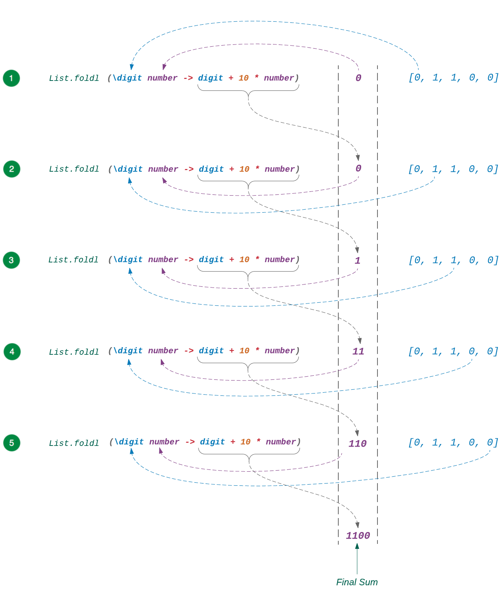
Nyní jak vstupy, tak výstupy funkce rippleCarryAdder vypadají mnohem úhledněji.
> rippleCarryAdder 1001 0011 0
1100V příští sekci si ukážeme, jak ověřit, že se funkce rippleCarryAdder chová dle očekávání a to s použitím testů.